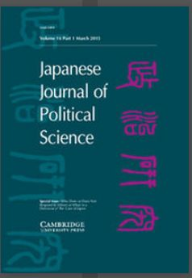

收录于合集

简 介
【 作者简介 】Timur Dadabaev, 日本筑波大学社会科学与人文科学研究院副教授，长期从事针对日本与欧亚地区的项目研究。
【 文章来源 】Japanese Journal of Political Science (2018)，19，542-561

【 期刊介绍 】Japanese Journal of Political Science, 是一份基于同行评议的学术期刊，旨在发表经过实证检验的政治科学研究，鼓励各领域、和针对各类社会科学研究方法论的文章投稿。同时，对单一国家研究和比较研究持开放态度，并欢迎采用跨学科方法研究政治科学问题的学术文章。
**【 编译 **】 徐枫潇
文 章 核 心
本文通过相似性与区别性对比，对后苏联时期中国和日本在中亚地区的基础设施发展战略进行分析。中国的参与着重强调对能源设备和交通设施的新建设，而日本将主要着眼点放在已有基础设施的保养、翻新、与维护。因此，中国更倾向于成为中亚地区的主要经济伙伴，日本则更看重作为援助提供者的身份，这两种角色有着不同的内涵。此外，从目前中日两国在中亚地区基础设施建设的参与来看，双方都在寻求角色调整以谋求新发展机遇。
** ** 主要内容****
对中国而言，中亚地区基建设项目的推进是在该区域发展睦邻友好关系的重要组成部分之一。“睦邻友好”中包含推动中国与中亚各国的互联互通性，以实现中亚各国与中国边境地区的经济发展需要。同时，这一系列举措并非所谓的“慈善”，而是出于一部分现实考量，即基础设施互联互通可以为中国构建一种新的国际身份认同添砖加瓦：中国并非只出口商品和服务到他国，同时还要促进中国的发展观念，治理方式和处理国家间关系的模式在该地区的传播和理解。
日本的在中亚地区基建领域的参与逻辑要比中国简单得多，首先，日本与中亚各国没有待解决的争端事项；同时，不同于东亚各国，日本的帝国主义与新殖民主义阴影并不曾波及中亚。此外，中日两国最大的区别在于，日本在基建发展与援助分配问题上强调普世价值，例如管理民主化，程序透明化，看重人权等。
中日两国在推进中亚地区基础设施发展项目上，都在尝试用当地国家乃至整个国际社会能接受的框架来运行。然而，两国在各自的“卖点”上确是迥异的，同时反映了国家间国际地位和国际立场的不同。2013年，中国领导人在访问中亚时提出了“一带一路”倡议，倡议主题中有三个部分与中亚地区有关：首先，之前所有与天然气和石油出口相关的项目都将被合并到“一带一路”倡议中来；其次，中国的基建相关项目是为了提供一种商业模式参考，并非是为了构建一种“领导”地位；第三，中国更强调与中亚地区在基建相关项目背后的互补性发展。日本的初衷和图景则不同于中国：首先是基于“开放的区域主义”（open regionalism）的考量；其次，日本在中亚基建项目的建设中经常扮演“主要捐赠者”的角色；为弥合传统角色带来的缺失，日本提出了“优质基建伙伴关系”的发展口号，并期待做出转型。
中日两国都积极参与中亚地区基础设施建设，但在角色定位与实践方式是不同的，中国试图将该地区的基础设施与本国的相连通，而日本致力于通过政府开发援助（ODA），以技术的输出和提供经验的方式，推动中亚基建设施的现代化，延长使用寿命。
总体上，中日两国都将中亚地区视作国家基建战略发展，扩展合作利益的新前线。对中国来说，更看重国内生产者与国际市场的联系；对日本而言，则事关已经掌握的、既能推动国际发展又能促进国内经济增长的专业技能。日本参与中亚地区基建试图从两方面发挥比较优势：以人类安全为本的基础设施建设观念&更先进的技术水平，同时，地缘上的距离较远，反而让日本（相对于临近中亚的中国而言）获得了较强的比较优势。
声明
此文为国政学人微信公众平台外文编译系列文章之一，由国政学人编辑首发，不代表本平台观点。欢迎转发分享，未经授权谢绝转载。如有问题，请联系guozhengxueren@163.com
更多阅读
国政学人 （ID：guozhengxueren)
为方便学人及时阅读高质量文章
别忘把国政学人设置 星标 哦~